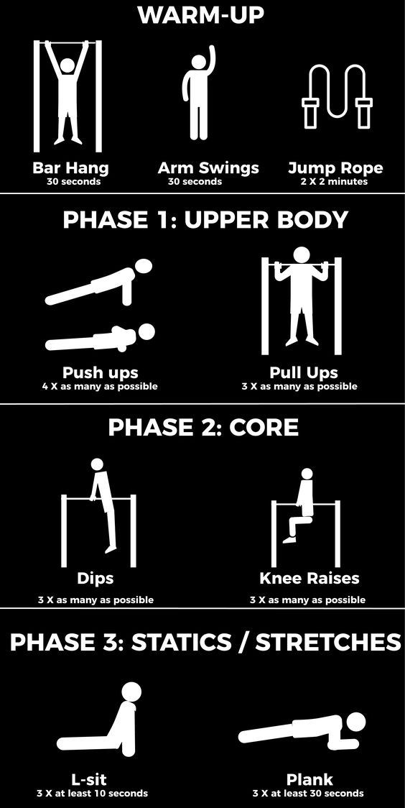
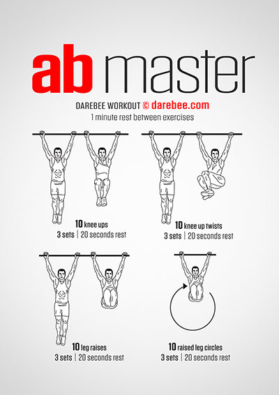

Същинска част

При стрийт фитнеса основна цел е оформяне на тялото и правенето го по-силно и издръжливо, а не толкова правенето на мускули.Къговата тренировка е доста популярна и при стрийт фитнеса.За повишаване на броя повторения за начинаещи е много полезно да се правят максимум повторения,а след това негативни.Негативни повторения се наричат повторенията, които се изпълняват бавно.Смята се, че сме 1.75 пъти по-силни в ексцентричната фаза в сравнение с концентричната.аздравяват се връзките ( при неправилното изпълнение на негативните повторения има висок риск от контузия. Запомнете: бавно и контролирано спускане на тежестта).Тоест, когато изпълняваме негативни повторения, можем да сложим по-голяма тежест, отколкото при стандартно повторение с позитивна част.
Тренировка за корем

Показаната тренировка по-горе е примерна за корем.Тя може да има много изменения, но това е най-ефективната тренировка за корем, поставяща начало в сферата на стрийт фитнеса.Тя не съдържа много повторения и серии и нейната цел е постепенно да се надгражда над нея.Функциите и,обаче, съвсем не са ограничени и имат много важна роля в изграждането на силна коремна част, главно защото обхваща всяка част от нея.Ключова за интензитета на тренировката е малката почивка между сериите, което спомага за бързият напредък между тренировките.Тренировката има за цел и да подобри баланса на трениращия,който е нужно да мърда само своите крака,било то изправени или не.